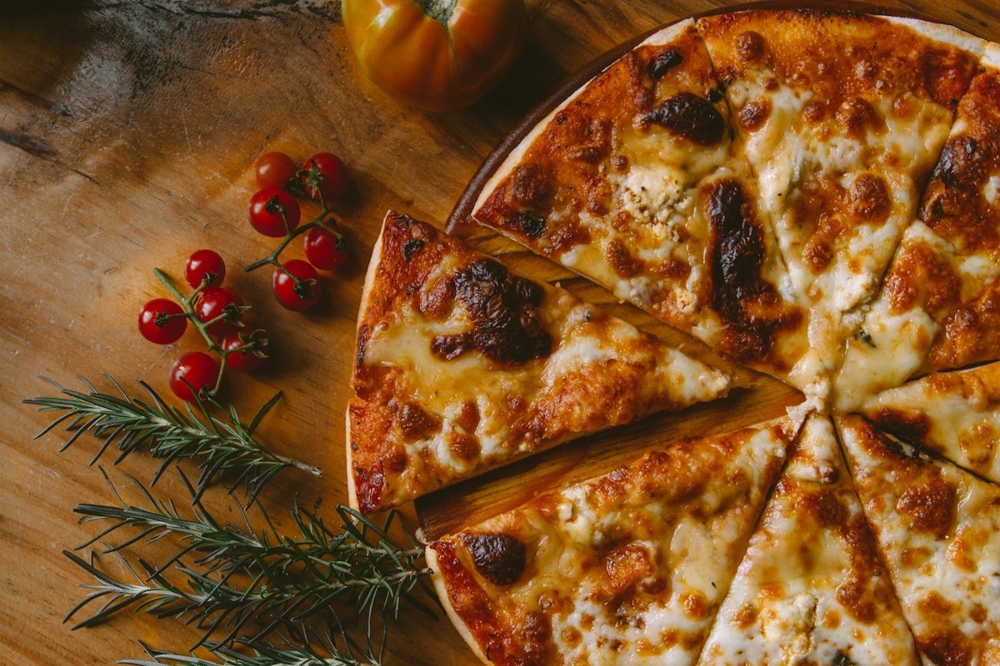

Metade de cada.
Inteira do seu jeito.
Escolha os sabores e veja o preço antes de continuar.
Esquema ilustrativo · consulte ingredientes e alergênicos.

Da escolhaao primeiro pedaço.
Encontre seu sabor.
Cardápio fictício. Ingredientes, alergênicos e contato entre alimentos precisam ser confirmados pelo estabelecimento.
O pedido só segue
quando estiver claro.
Você monta e confere. A operação real confirma o preço, a disponibilidade e o prazo de preparo antes de aceitar. Esta demonstração não envia pedidos nem recebe pagamentos.
Antes do primeiro pedaço.
O meio a meio custa a média dos sabores?
Neste modelo vale o sabor de maior preço, multiplicado pelo tamanho escolhido. Borda, bebida e entrega são somadas separadamente. A regra será adaptada à sua pizzaria.
Tenho uma restrição alimentar. Como pedir?
Consulte ingredientes e possibilidade de contato entre alimentos diretamente com a equipe. O esquema da pizza é ilustrativo e não indica ausência de alergênicos.
O pedido será enviado?
Não. Você pode conferir, copiar e baixar um resumo demonstrativo. Nenhuma cozinha ou entrega está conectada.